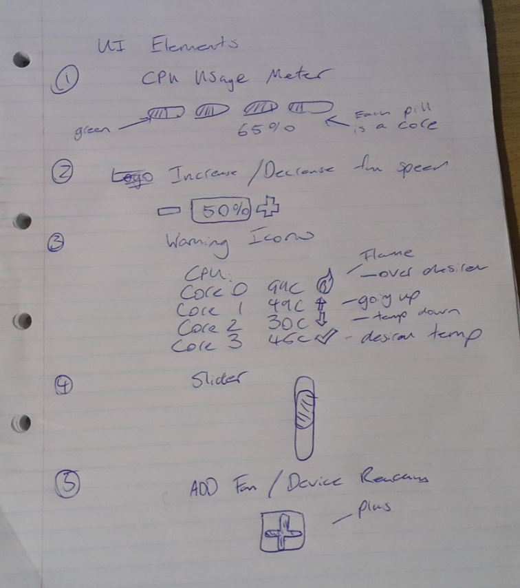
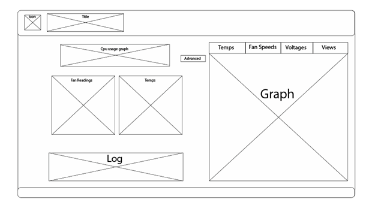
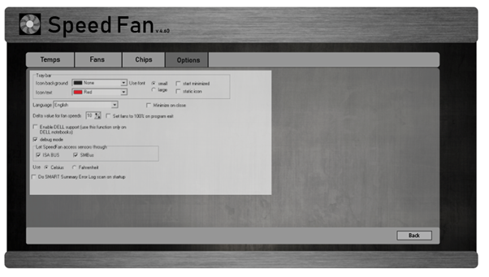
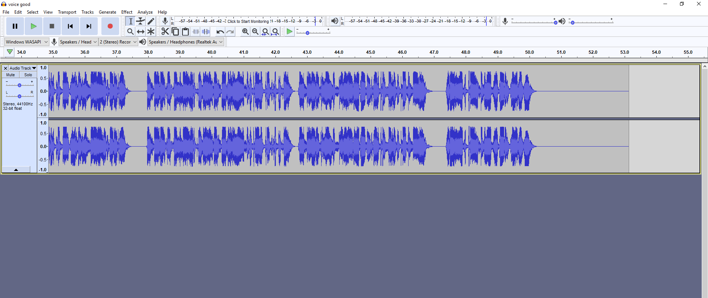

My Multimedia Portfolio


About
This is my Multimedia portfolio, it holds all my assignments I have worked on this semester. This portfolio is hosted on github and deployed using github pages.
I have used the bootstrap template Freelancer as a base and have edited the template it suit my preference.
UI Project
UI Development
by Callum Pickersgill
Intro:
For my UI development Assignment I going to do a fan control App, I chose this because I have always used a desktop application called Speed Fan, but it is very plain and windows-like, I want to make a more clean and modern interface for speed fan or a similar fan control software.
Research:
F-Stream Tuning:
The design of this program is very bright, has good contrast with the red and black, I don't like the Buttons on the top left, I feel the Glassy white effect and the white text blend in too much. Everything is spaced out well and it looks easy to understand.
Gigabyte EasyTune:
I like the contrast of blue and black in the program, but I think there is not enough of it, as in there is to much black. The text looks a little too small but that could just be the screenshot. I like the large icons at the side that make it clear what the buttons are for. Placement just looks a little off to me, everything is spread around the program like they were just trying to fill up space. Also I think the use of space is used poorly with large areas of emptiness.
MSI AfterBurner:
I have always liked Afterburner because it is compact and shows everything you need on the opening screen, I like the graphs on the right and the use of color and contrast of green and black.
MSI Command Center: I really like the layout of this program with the graph on the right and controls on the left. I really like the brushed Metal textures on the top and bottom giving it a polished look. Information is clearly displayed to the user and the use of contrast and space is used effectively.
Planning:
Sketches:

Wireframes:
My first main page wireframe: I realised my wireframe was too detailed, it was closer to a mock-up, so I used the ideas in it in my mock-up and simplified it.
Main Page WireFrame

Advanced Page WireFrame:
Options Page WireFrame
Mock Ups
First Mock-Up
My initial mockup taken from my WireFrame, I wanted to stick with the features of speedfan but have a main page with more information for the user. As Speedfan is very plain I didn't want to use too much color, but still have contrast and have it look good.
Above I have added metal textures to the top and bottom, I feel this looks really good and took inspiration from MSI command center. I have added a title and logo and started experimenting with rounding off the display blocks, I think this will be a theme and I will have minimal sharp edges. I am going to trace the fan logo in order to make my own. The current one is a placeholder. There are multiple tabs for showing graphs, I am only showing the temp one here.
Traced Logo using the Illustrator curvature tool
Above is the main page closer to completion, I have rearranged the blocks so the important spec information is at the top. I feel the blocks are spaced well and it looks pleasing to the eye, I want to add texture to the grey blocks but cannot find anything that works well. I added the options to the graph and I think it serves its purpose effectively
This is the final mockup for the main page, I have added some small details like shadows to the grey blocks to give more definition, warning icons for the temps, and accurate log information with a slider.

Other views in the advanced section:
I really ran out of time to make all the options from scratch so I screencapped options from speedfan, I would have liked to space it better and make it fit the window.
I would have also liked to show more screens with different graphs.
Design, Tools and Techniques:
To create my wireframes and mockups I decided to use Adobe illustrator. I tried using Photoshop for the mockup but I found I took a lot longer. I am more familiar with Illustrator and found it easier to create assets like icons and layouts in it. I mainly used the rounded rectangle tool for my mockup and used the draw inside mode to add texture and colours cleanly. To trace logos I used the curvature tool.
The curvature tool allowed me to accurately replicate the images to a good standard, I then used the color dropper to match the colours.
Exporting Work:
I exported my work to this Google Doc, It qualifies as a online hosting platform. I took screenshots of my work and copied it over. In the long run I want to put all my work on a github pages site, I have set one up but I do not have the time to implement it.
To keep track of my assets I kept All my images in a img folder in my Multimedia Folder, this saved time trying to find them on my desktop.
Close ProjectVideo Project
Video Project
Summery:
For my short video I am going to do a review on UncleBens rice, It will be aimed at students to let them know what foods are quick and convenient to have on the go, it will feature shots of the product, a short demonstration of how it is prepared and cooked , and a rating and thoughts on the product at the end, the video will be voiced over on post.
Pre Production:
Scenes:
Intro plays
Focus in on rice
Still shot while introducing topic
Rotating shot
Nutritional info
More shots
Cooking instructions
Putting in microwave
Timings
Taking out
Full bowl
empty
Talk about thoughts
Rate
credits
Shooting Schedule:
Story Board:
Voice over decision:
I originally intended to do a voice over using my own voice, but because did not have the time (my own mistake) I could forsee having gaps in material when I edited it in later. Because of this I decided to to use a voice to text system, this allowed me to add lines of voice over on the fly and edit them if need be, it was also good that its was consistent and not differ in quality, I also think it adds character to the video.
Script
Welcome to Student Meal reviews.
Today I am reviewing Uncle Ben’s egg fried rice!
Uncle Bens fried rice packs 1600 kilojoules of energy and 10 grams of protein into every packet, these amounts may differ from flavour to flavour.
You can usually find it at your local supermarket for 2 dollars 50 for a 250 gram pack.
We found Uncle bens easy to prepare with the instruction on the back simple to follow,
Simply tear open the top of the pack halfway and place it in your microwave
Cooking time depends on the power of your microwave, for 700 watts cook for 2 minutes and for 900 watts cook for 90 seconds.
Once your rice is cooked empty it into a bowl and it’s ready to eat!
I found uncle bens rice a convenient and flavoursome meal for the time it takes to prepare, I highly recommend it for any hungry student who is too busy to cook a full meal.
See you next time for the next Student Meal Review!
Filmed and produced by Callum Pickersgill
Special thanks too:
Lissy
Uncle Ben.
The microwave.
Goodbye.
Production:
Lighting: I had a lamp help behind me to improve the lighting in the desk shots
Focus shots: I used the manual focus on my camera to blur and unblur the uncle bens to make a cool intro effect.
Post production:
Colour correction:
I experimented with the color correction effects in premiere pro
Stabilization:
I used the stabilization effects on some shots to make them less shaky
Intro:
intro: I found a template after effects intro on youtube and changed the text to my liking, then imported it into PP
Outro:
I made a new layer and added text to make a sort of credits scene
Text to Speech:

I used naturalreaders.com and audacity to capture my text to speech, I then imported it into Premiere Pro
Editing:
I used Premiere pro to edit my clips together, I kept all my assets in one folder for easy accessibility
Exporting:
I exported the finished video at x264 720p using PP exporter and used youtube to host it.
Close Project